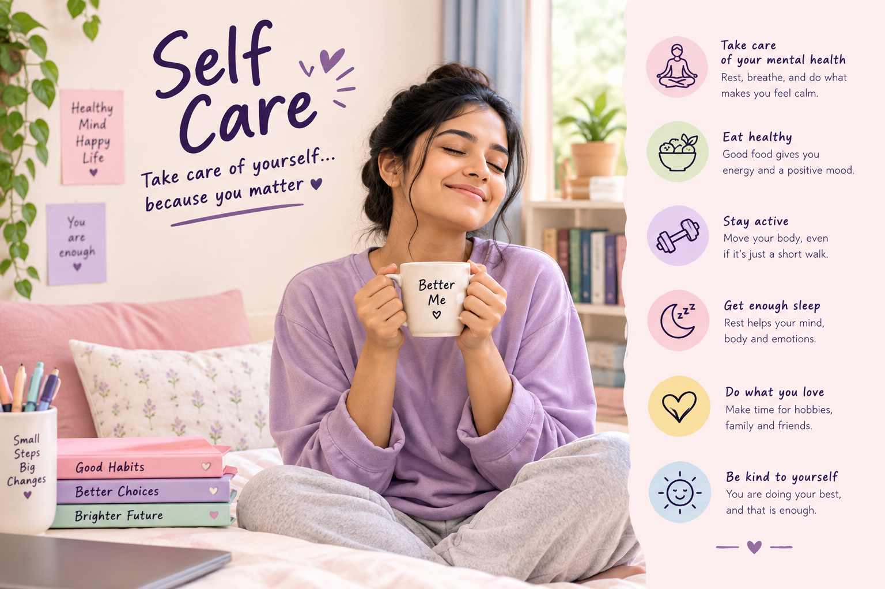

Taking Care of Yourself Matters
Self-care means paying attention to your physical, emotional and mental wellbeing. It can include getting enough rest, eating balanced meals, staying active and making time for activities that help you feel refreshed.
Self-care is not selfish. Looking after your own wellbeing can help you manage everyday responsibilities and recognise when you need additional support.
🌷 Areas of Self Care
😴 Sleep & Rest
Give your body enough time to rest and maintain a regular sleep routine whenever possible.
🥗 Healthy Nutrition
Choose a varied and balanced diet and drink enough fluids to support your everyday wellbeing.
🏃 Physical Activity
Regular movement or suitable physical activity can support physical health and overall wellbeing.
🧠 Mental Wellbeing
Make time to relax, manage stress and talk to someone you trust when you are struggling.
💗 Personal Time
Spend some time on hobbies, interests and activities that you enjoy.
🤝 Social Support
Stay connected with trusted family members, friends or other supportive people.
💗 Self Care: Do & Don't
✅ Do
- Make time for adequate rest and sleep.
- Eat regular, balanced meals.
- Stay physically active in a suitable way.
- Take short breaks when you feel overwhelmed.
- Spend time doing activities you enjoy.
- Talk to trusted people about your feelings.
- Seek professional help when you need additional support.
❌ Don't
- Do not ignore persistent physical or emotional problems.
- Do not feel guilty for taking reasonable time to rest.
- Do not compare your wellbeing journey with others.
- Do not use harmful substances as a way to cope with stress.
- Do not try to handle serious problems completely alone.
- Do not ignore symptoms that are getting worse.
- Do not delay professional help when it is needed.
👩⚕️ When Should You Seek Professional Help?
Self-care can support everyday wellbeing, but it cannot replace professional healthcare when you have a health condition or serious concern.
Consider speaking with a healthcare professional if you have persistent physical symptoms, ongoing emotional difficulties, problems affecting your daily life or concerns that are becoming difficult to manage.
If you feel unsafe or have thoughts of harming yourself or someone else, seek urgent professional or emergency support.